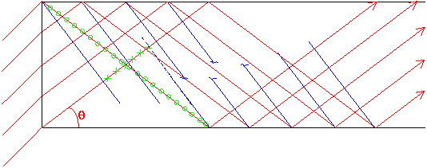

Fiberoptik

En optisk fiber är en komponent avsedd att föra över stora mängder information, på
kort tid. Överföringen använder laserljus som leds i ett material med högra
brytningsindex än sin omgivning. Ljusledningen bygger på totalreflektion dvs att när ljus
ska brytas genom en yta, och kommer från ett medium med högre brytningsindex än det är
på väg mot inte ger någon bruten stråle om infallsvinkeln är tillräckligt
stor. Jfr fig. Den röda strålen har så stor infallsvinkel att brytningsvinkeln blir i det
närmast 90�. Större än 90� kan den ju inte gärna bli så för större
infallsvinklar
(grönt i fig)
kommer allt ljus att reflekteras. Idén är nu att göra en tråd av material
med högre index (kärna=core) omgiven av material med något lägre (mantel=cladding). Metoden
att leda ljus kommer nu att fungera i kärnan även om man böjer den måttligt.
Det finns flera fördelar med informationsöveföring i fiber jämfört med olika
elektriska alternativ (dubbelledare och koaxialkabel exvis):
 Man kan skicka fler informationsenheter (bits tex) per
sekund i en fiber eftersom ljuset som våg har så mycket högre frekvens än
motsvarande för elektriska signaler. (Hundratals THZ jämfört med enstaka GHz).
Däremot kommer inte signalen fram snabbare, eftersom information i en vanlig koaxialkabel
också färdas med ljusets hastighet.
Man kan skicka fler informationsenheter (bits tex) per
sekund i en fiber eftersom ljuset som våg har så mycket högre frekvens än
motsvarande för elektriska signaler. (Hundratals THZ jämfört med enstaka GHz).
Däremot kommer inte signalen fram snabbare, eftersom information i en vanlig koaxialkabel
också färdas med ljusets hastighet.
Fibern läcker inte ut någon signal som kan
avlyssnas på något vettigt sätt, vilket elektriska ledningar gör. Omvänt
så är de heller inte särdeles känsliga för störningar av olika slag
utifrån. EMP och kraftiga magnetfält från transformatorer lämnar i princip den
optiska signalen oberörd.
Fibern är lättare än de flesta andra
material, vilket kan vara bra för vissa tillämpningar
Råmaterialet till optisk fiber är krossad
kvarts (dvs sjösand) vilket inte är någon bristavara och därför billigt.
Fiberoptik nivå 2
För att ljuset ska ledas genom fibern krävs att infallsvinkeln mot gränsytan kärna/mantel
hela tiden är större än gränsvinkeln för totalreflektion. Denna ges av att
brytningsvinkeln är 90� (större kan den ju inte gärna bli):
För att detta ska ske inuti fibern ställs vissa krav på den vinkel med vilken ljuset leds in
i fibern. Se fig. Man får ett största värde på a som svarar på det min sta
värdet på iG för att få totalreflektion. Sinus för den vinkeln är
såpass viktig att den fått ett eget namn: Numerisk Apertur eller NA:
Om man sätter n2 till n1-
D
n, och inser att
D
n är litet kan det sista ledet skrivas om till:
NA visar alltså i vilket vinkelområde strålarna måste ligga för att kunna ledas
vidare.
Dett ska nu kombineras med ytterligare ett villkor, som är lite knöligare: Ljusets vågnatur
kommer in eftersom fibern är så liten. Vågfronter får inte vara avbrutna (av samma
skäl som i kapitlet om diffraktion). Betrakta nu nästa fig. Vi ser där vågor som faller
in med en given vinkel.
Strålarna är röda
och får inuti fibern vinkel
q
,
de vågfronter som hör till strålarna
(alltid vinkelräta mot strålarna) är blå.

För att ljus ska kunna ledas i fibern måste vågfronterna före och efter första
reflektionen ligga rakt för varandra, dvs inte så som i fig. (Streckad fortsättning på
vågfront passar inte in.) Ett villkor för att de ska göra det är att skillnaden mellan
de bägge sträckor som är markerade med
gröna kryss och gröna ringar
ska vara ett helt antal våglängder.
Nu måste vi inse (om vi inte ska behöva göra hela härledningen, vilket är vidrigt)
att de vinklar som gör att vägskillnadenb uppfyller villkoret ligger tätare och tätare
ju större fiber är. Om fiber är extremt liten finns det kanske inga sådana vinklar
alls.
Detta ska vi nu utnyttja för att göra en så kallad singelmodfiber:
Först och
främst: Vinkeln
q
=0 är alltid en tillåten väg, eller mod, för ljuset, eftersom några
vågfrontsproblem då inte kan uppkomma. 
Välj nu diametern på fiberns kärna så liten att den förat vinkel som uppfyller
villkoret "grön skillnad" = heltal våglängder, är större än NA. Då
innebär det att det bara finns en väg ljuset kan gå i fibern, vilket är en mycket stor
fördel, eftersom närvaron av flera tillåtna vägar leder till flera tänkbara
gångtider för en puls genom fibern, med därtill hörande pulsutbreddning (dvs
-förstöring). Sådana fibrer kommer med det val av material som finns idag att ha
kärndiametrar runt 3-8�m. Manteln görs sedan mycket tjockare för att göra fibern
mekaniskt stabil.
Singelmodfibrer har idag en dämpning på ca0.1dB/km. Efter 300km (Sthlm-Karlstad) har alltså
intensiteten gått ner en faktor 1000! Det motsvarar (som kuriosum) att om havet vore lika
genomskinligt som fibern skulle man kunna titta ner genom ytan vid Marianergraven och se botten utan
egentlig dämpning.
Till
nästa sida
(IR-optik)
Till
innehållsförteckningen